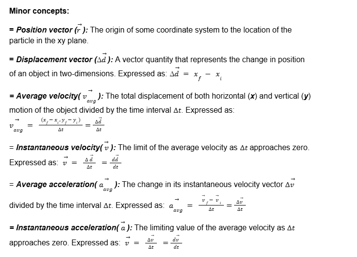
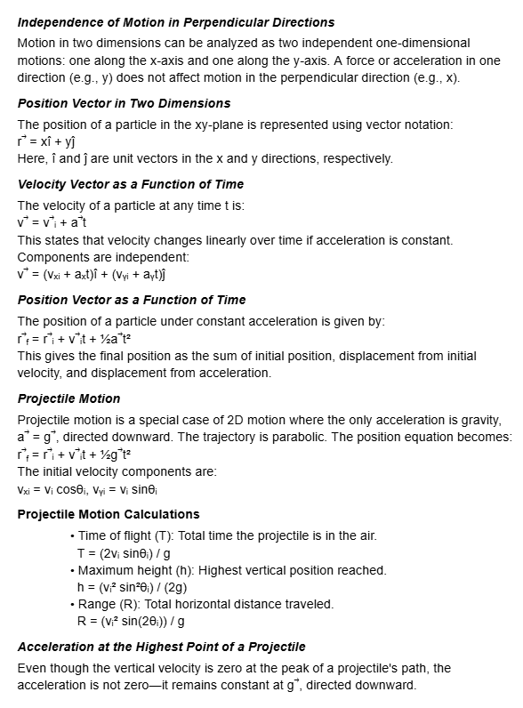
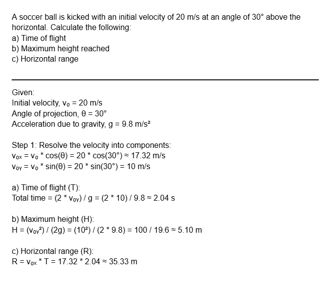

HOW IT WORKS
Kinematics in One dimension
Kinematics in one dimension (ID) is the study of motion along a straight line, so only one
coordinate (such as x or y) changes over time. It focuses on describing how objects move without
considering the forces that cause the motion.
Definitions:
- Position: The location of an object along a straight line.
- Vector: A quantity that represents magnitude (size) and direction.
- Scalar: A quantity that represents its magnitude or size.
- Displacement: The vector quantity that describes the change from the
initial position.
- Speed: The scalar quantity that indicates the distance an object travels
per unit of time; the magnitude of velocity.
- Velocity:Speed of an object including its direction of motion.
- Instantaneous velocity:The velocity of an object at any given instant in
time.
- Average velocity:The total distance traveled divided by the total time
interval.
- Constant velocity:A velocity that does not change with time.
- AccelerationThe vector quantity of the rate at which an object's velocity
changes with time; this change may be in speed, direction, or both.
Kinematics in Two dimension
Kinematics in two dimensions is the study which deals with the motion of certain objects along
both the x – and y – axes. It involves paths that form a curved or parabolic, such as projectile
motion or circular motion.
Minor Concept

Major Concept

Example of usage in word problem:
The observation deck of the tall skyscraper is 370 m above the street. Determine the time
required for a penny to free fall from the deck to the street below. t= 8.69 sec using the 4th
equation.
Example of applications:
- Analyzing cars moving along a straight road
- Objects dropped vertically (free fall)
- Motion along a straight track
- Elevators moving up and down
- A ball rolling along a straight hallway
- Tracking the position and speed of a rolling ball on a flat surface.
- An object sliding down an inclined plane (treated as 1D along the slope)
- A piston moving inside a cylinder
Sample Problem

Sample Applications:
- Analyzing the motion of a basketball, soccer ball, or football in the air.
- Calculating the trajectory of projectiles or thrown objects.
- Simulating realistic motion in two-dimensional space
- Predicting and verifying object paths in projectile setups.
Note:
- Always break the motion into horizontal and vertical components.
- Gravity only affects vertical motion.
- Make sure angles are in the correct units (degrees or radians) based on
your calculator.
- Time is a common variable for both directions; use it to connect vertical
and horizontal analysis.
- Check for symmetry; many projectile motions are symmetric if they land at
the same height.
- Always label known and unknown quantities clearly before solving.
Additional Notes For Users
- Do not ignore signs (left and down symbolizes the negative sign).
- Remember to use SI units.
- Analyze if the calculated value is physically reasonable, such as not having time and
distance as a negative value.
- Look for language cues for the values of variables. For example.
- "Starts from rest" means initial velocity = 0 m/s
- "Comes to a stop" / "Stops" / "Brought to rest" means final velocity = 0
m/s
- "Reaches a speed of..." means final velocity
- "Moving at a constant speed/velocity" means acceleration = 0, and initial =
final velocity
- "Returns to the starting point" means displacement = 0
- "Accelerates uniformly" means constant acceleration; use standard kinematic
equations
Reference:
Serway, R. A., & Jewett, J. W. (2010). Physics
for scientists and engineers (8th ed.). Brooks/Cole